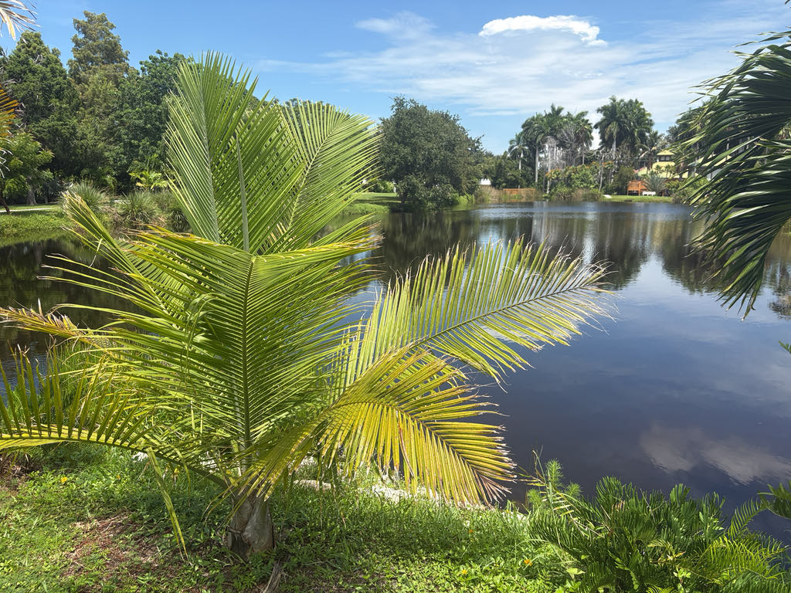

- One of the world's most familiar houseplant palms is also an endangered species in the wild. An IUCN assessment estimated that only about 900 mature trees remained across its entire native range.
- Those little potted palms in garden centers are juveniles of a tree that, in the right conditions, can eventually reach roughly 80 feet or more — not exactly a windowsill plant.
- Its species name tells you exactly where it belongs: rivularis means 'of streams.' It grows along rivers and in wet ground within one of the drier corners of Madagascar — a river palm marooned in a semi-arid landscape.
Ravenea rivularis is native to a surprisingly small part of southwestern Madagascar. It grows along rivers and in wet ground within a region that is otherwise dry and semi-arid. Some plants grow in shallow, slow-moving water — which explains a great deal about the specimen in front of you.
Its populations are separated by the dry landscape around them. A palm that depends on wet river habitats simply cannot spread from one river system to another across the desert in between, so the wild range remains fragmented and restricted.
The species name rivularis means 'of streams' — an unusually direct description of where this palm grows. It was formally described by French botanists Jumelle and Perrier de la Bâthie, first published in 1913.
Majesty Palm belongs to Ravenea, a genus of 23 accepted species native to Madagascar and the Comoros. Many of them are threatened or rare, making Ravenea an interesting example of Madagascar's remarkable — and heavily pressured — palm diversity. In Florida, Ravenea rivularis is grown as an introduced ornamental across the southern peninsula.
- The conservation story here is real and urgent. The IUCN upgraded Ravenea rivularis from Vulnerable to Endangered, driven by a continuing decline in mature individuals, ongoing habitat loss along riverbanks, and the harvest of wild seed for horticulture.
- An IUCN assessment estimated about 900 mature trees remaining, scattered across a handful of fragmented sites — most of them outside protected areas.
- The species is also listed under CITES Appendix II, which regulates international trade to prevent levels incompatible with survival in the wild. Its popularity in horticulture is a complicated picture: wild seed collection is a documented threat, yet cultivation has spread the species far beyond its tiny native range.
- The real conservation challenge is protecting the wild populations and the river habitats they depend on.
- In Florida cultivation, this is a palm that rewards moisture and resents drought — not because it is fussy, but because it evolved beside rivers. Site it well and it grows into the tree it actually is rather than the slow-declining potted decoration it is usually sold as.
This palm has little documented wildlife value in Florida. It has no co-evolutionary history with local fauna and does not serve as a larval host for Florida butterflies or moths. Visitors looking for the park's strongest pollinator and wildlife habitat will find it in the native plantings nearby.
In its Madagascan homeland, flowers attract generalist insect visitors — flies and beetles primarily — and female trees produce small red drupes available to birds and small mammals where both sexes are present.
The palm has a solitary, smooth trunk and a crown of long, arching, feather-like leaves. Its flowers are small and tucked among the leaf bases, so they are easy to overlook. The species is dioecious: individual palms are either male or female. Female trees produce small red fruits, but only after receiving pollen from a male.
Small, whitish, and not individually showy. Both male and female flower clusters sprout from between the leaf bases on branched stalks. Look closely at the base of the fronds in late spring and you may spot them — cream-colored brushy clusters tucked right where the leaf stems clasp the trunk.
Female trees produce small red drupes in late summer to early fall, each containing a single seed. In the wild, seeds ripen as Madagascar's wet-season flows peak — they drop into the river and wash downstream, making water the palm's primary dispersal vector.
Solitary, smooth, and pale gray-brown, slightly swollen at the base and tapering gradually toward the crown. Old leaf bases leave distinct ringed scars as fronds are shed. Trunk diameter at the base can reach 14 to 20 inches on mature specimens.
Start at the base — notice the subtle flare where the trunk meets the ground, wider there than anywhere above it. Scan up the smooth gray trunk and count the horizontal ring scars where old fronds attached and eventually dropped. At the top, a head of long, arching feathery fronds in deep glossy green.
In late spring, look closely where the leaf stems clasp the trunk: cream-colored brushy flower clusters may be sprouting from between the leaf bases. And if you see small red fruits, you are looking at a female tree. Only female trees produce fruit, and they need pollen from a male tree nearby to do it.
Not known to be toxic to people, dogs, cats, or horses, and presents no handling concerns.
This is a dioecious species — individual trees are either male or female, and fruit requires one of each in proximity. You can only tell which you are looking at when it flowers or fruits: a fruiting tree is female.


- © Randall Carter (CC-BY-NC), via iNaturalist